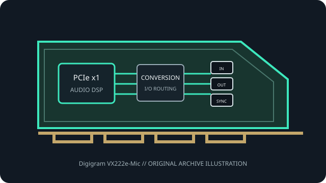

[ PROFESSIONAL AUDIO // PCIe ADD-IN ]
Digigram VX222e-Mic
The VX222e-Mic is a distinct microphone-equipped variant of Digigram’s discontinued PCIe broadcast audio card.

MODEL SCOPE: Digigram VX222e-Mic. Mic-preamp variant of Digigram’s stereo PCIe broadcast card, with model-specific driver, hardware revision and setup support. Confirm PCB/IS revision, accessories, slot wiring and current vendor driver before installation.
Model-specific specifications
| Model-specific SKU | Digigram VX222e-Mic |
|---|---|
| Host interface / lanes | PCI Express x1 card; Digigram states it fits x1, x2, x4, x8, x16 and x32 PCIe slots. Technical status (IS) revision changed while the model reference remained unchanged. |
| Codec / conversion | 24-bit A/D and D/A; Motorola 56303 DSP at 100 MHz (512 kWords RAM). Converter IC part numbers are not disclosed. Analog dynamic range exceeds 104 dB(A) input and 106 dB(A) output; DSP supports PCM mixing, crossfades, MPEG audio and time-scaling. |
| Analog I/O | Two balanced mono line inputs and two servo-balanced mono line outputs (+24 dBu maximum), plus one mono microphone input mixed with the line inputs before A/D conversion. Mic preamp gain is 0–66 dB; switchable +48 V phantom power. Stereo headphone output is parallel to line outputs. |
| Digital I/O / protocols | One AES/EBU stereo input and output (also usable as S/PDIF); input is AES42-compatible with hardware SRC and 10 V digital-microphone supply. Additional AES/EBU sync input supports external clocking; also has LTC input, two GPI/two GPO, inter-card sync and a stereo headphone output. |
| Resolution / sample rates | 24-bit A/D and D/A; programmable sampling frequency from 8 to 192 kHz. The digital input SRC supports up to 192 kHz and ratios from 1:8 to 7.5:1; PCM formats include 8/16/24-bit and IEEE 754 float. |
| Latency / monitoring | Digigram documents ASIO, WDM kernel streaming, DirectSound, WASAPI and ALSA interfaces. Actual capture latency follows the chosen driver buffer and host; Digigram documents low-latency driver modes but no fixed round-trip number. |
| Driver / OS compatibility | HR Runtime includes WDM/DirectSound, ASIO and legacy MME. Digigram lists Windows 7/8/10 and Windows Server 2003–2016 in model support; pre-2017 Linux cards use in-kernel ALSA, with later cards requiring the published driver package. |
Compatibility & preservation
Keep VX222e-Mic separate from VX222e: its mic input path and hardware revision-specific runtime requirements differ. Digigram identifies revisions through the rear-label IS value; IS=6 requires HR Runtime 1.80c001 or compatible later release.
- Photograph the card label, PCB revision, rear connectors and included breakout cables before service.
- Retain the exact working driver, firmware, operating-system version, clock and routing configuration.
- Confirm lane wiring, bracket clearance, channel map and external converter/network compatibility; connector fit alone is not a compatibility guarantee.
Manufacturer sources
- Digigram VX222e-Mic — official discontinued-product supportManufacturer documentation for this model, driver family or revision.
- Digigram VX222e/VX222e-Mic — official user manualManufacturer documentation for this model, driver family or revision.
- Digigram stereo PCIe cards — official revision/driver noticeManufacturer documentation for this model, driver family or revision.